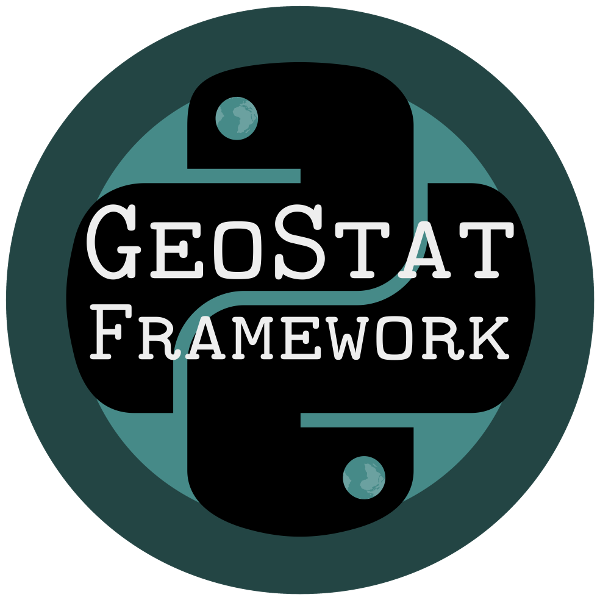
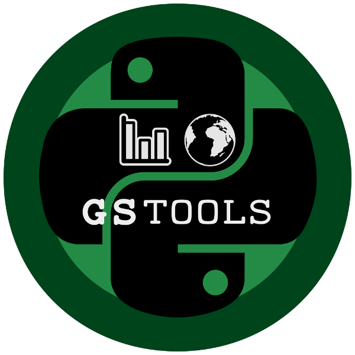

GeoStat Framework¶
{kind=link}
The GeoStat Framework is a Python framework for geostatistical simulations.
Included Packages¶
GeoStatTools¶
GeoStatTools is a library providing geostatistical tools like random field generation, variogram estimation and covariance models.
{kind=link}
| Source: | https://github.com/GeoStat-Framework/GSTools |
|---|---|
| Documentation: | https://geostat-framework.readthedocs.io/projects/gstools |
| Installation: | pip install gstools |
ogs5py¶
ogs5py is a python-API for the OpenGeoSys 5 scientific modeling package.

| Source: | https://github.com/GeoStat-Framework/ogs5py |
|---|---|
| Installation: | pip install https://github.com/GeoStat-Framework/ogs5py/archive/master.zip |
AnaFlow¶
Anaflow provides several analytical and semi-analytical solutions for the groundwater-flow-equation.

| Source: | https://github.com/GeoStat-Framework/AnaFlow |
|---|---|
| Documentation: | https://anaflow.readthedocs.io/en/latest/ |
| Installation: | pip install anaflow |
WellTestPy¶
WellTestPy is a python-package for handling well based field campaigns.
{kind=link}
| Source: | https://github.com/GeoStat-Framework/welltestpy |
|---|---|
| Installation: | pip install https://github.com/GeoStat-Framework/welltestpy/archive/master.zip |